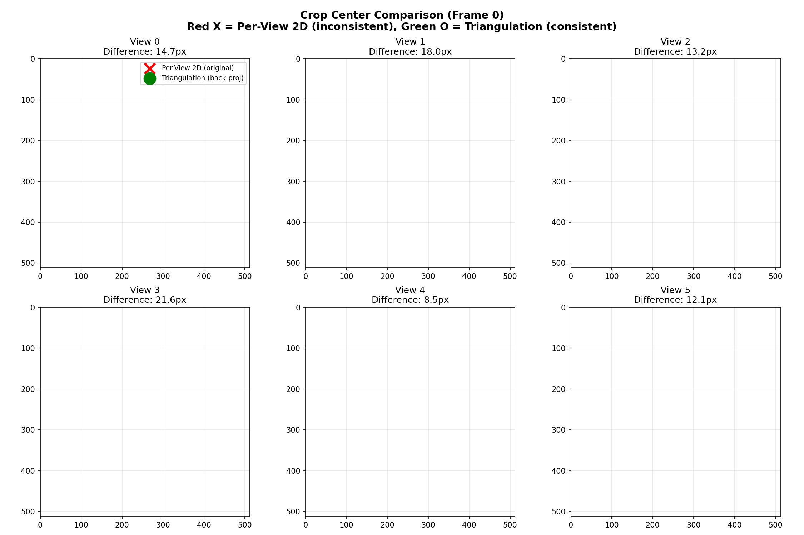
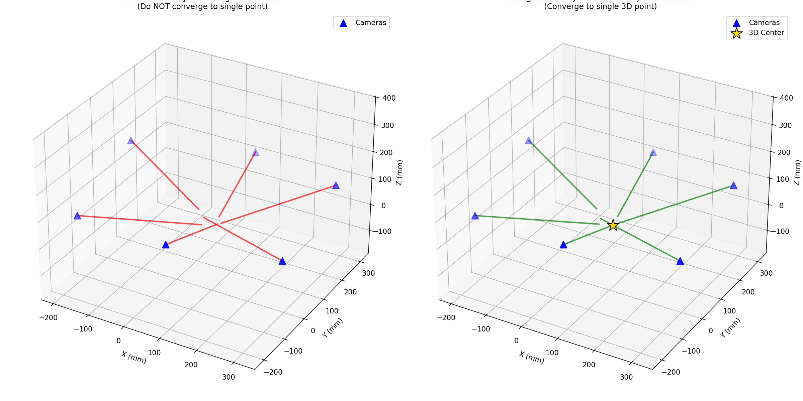
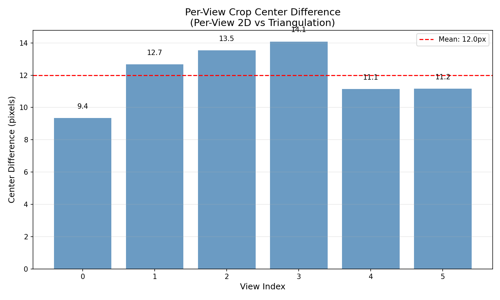

Date: 2026-01-17 12:36
Samples: 10 frames
This is the actual inconsistency that propagates to 3D reconstruction when using per-view 2D centroids.
| Method | What it uses for cropping | Cross-View Consistency |
|---|---|---|
| Per-View 2D | Original 2D centroid from each view's mask | ❌ Inconsistent (12.0px) |
| Triangulation | Back-projected 2D center from unified 3D point | ✅ Consistent (0px by construction) |
Red X = Per-View 2D centroid (inconsistent), Green O = Triangulation back-projected center (consistent)

Left: Rays from original centroids (don't converge). Right: Rays from back-projected centers (converge to 3D point)


| Metric | Triangulation | Per-View 2D | Why Same? |
|---|---|---|---|
| Ray Convergence Error | 2.24mm | 2.24mm | Both compute from same 2D centroids |
| Reprojection Error | ~14px | ~14px | Both measure same input inconsistency |
| Crop Center Difference | 0px | 12.0px | THIS is the real difference! |
The 12.0px crop center difference proves that per-view 2D centroid method causes cross-view inconsistency. When each view crops at a different location, the object appears at different pixel positions across views, directly causing ghosting in 3D reconstruction.
Recommendation: Use triangulation to compute unified 3D center, then back-project to get consistent 2D crop centers for all views.
Generated by FaceLift Mouse Project - Center Estimation Validation v2